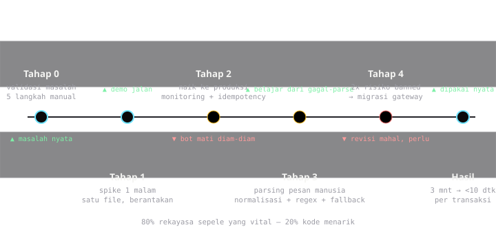

Studi Kasus
Otomasi WhatsApp dari Nol Sampai Dipakai
Bot WhatsApp untuk transaksi PPOB (pulsa, token listrik, tagihan) bukan ide saya sendiri — pemilik toko yang minta. "Setiap ada yang chat minta token, saya harus balas manual, buka web billing, proses, balas lagi. Capek." Artinya ada masalah nyata, dengan korban nyata: waktu pemilik toko.
Artikel ini mengulas jalan dari nol sampai bot yang benar-benar dipakai — bukan versi idealnya, tapi keputusan-keputusan teknis yang saya ambil, termasuk yang akhirnya saya ubah karena salah.
Tahap 0: memastikan masalahnya benar
Sebelum nulis kode, saya duduk bareng pemilik toko dan hitung alurnya. Ternyata proses manualnya bukan cuma "balas chat":
- Pelanggan chat: "token 100k nomor 1234…"
- Pemilik toko buka panel PPOB di web terpisah, isi form, bayar dari saldo
- Tunggu status sukses (kadang pending ber menit)
- Balas chat pelanggan: "sudah ya, cek HP"
- Catat transaksi buat rekap
Lima langkah, diulang puluhan kali sehari. Bot yang bagus tidak mengganti semuanya — bot yang bagus mengganti langkah 2, 3, dan 4, dengan catatan di langkah 5 otomatis.
Definisi sukses bot ini bukan "keren", tapi: pemilik toko bisa fokus melayani pelanggan yang datang fisik, tanpa HP-nya berbunyi terus.
Tahap 1: spike pertama — jalan dulu, rapi belakangan
Spike pertama sengaja jelek. Tujuannya cuma menjawab satu pertanyaan: apakah kirim-terima pesan WhatsApp secara program bisa jalan stabil? Pilihan di waktu itu:
- WhatsApp Business API resmi (Meta) — stabil, tapi ada biaya per percakapan dan proses approval yang lama untuk kasus sederhana.
- Library unofficial (whatsapp-web.js dkk.) — gratis, jalan cepat, tapi risiko banned akun dan bisa rusak kapan pun WhatsApp ganti UI web-nya.
Saya pilih jalur unofficial untuk spike, dengan dua alasan: validasi konsep tidak boleh menunggu approval, dan volume awal kecil. Ini keputusan yang sadar akan risikonya — dan keputusan yang akhirnya saya revisi, dibahas di tahap 4.
Satu malam, hasil spike: bot bisa menerima chat, mem-parsing format "token [nominal] [nomor]", memanggil API PPOB, membalas hasilnya. Semua dalam satu file yang berantakan. Tapi pemilik toko langsung paham potential-nya begitu lihat demo.
Tahap 2: dari spike ke sistem — yang bikin bot mati
Naik dari demo ke pemakaian nyata adalah lompatan yang lebih besar dari perkiraan. Tiga hal yang (hampir) membunuh bot:
1. Session yang hilang
Bot login WhatsApp via session. Server restart → session hilang → bot mati diam-diam. Pelanggan chat, tidak ada jawaban, pemilik toko panik. Fix: persist session ke disk + health check yang mengirim notifikasi ke nomor saya sendiri kalau bot down. Monitoring harus mengakui bahwa bot akan mati — pertanyaannya cuma "kamu tahu cepat atau tidak".
2. Pesan duplikat & out-of-order
Pelanggan kirim "token 100k 1234…" dua kali karena yakin chat pertama gagal. Versi awal bot memproses dua-duanya. Dua transaksi, satu kebutuhan. Fix: idempotency key dari kombinasi (pengirim, isi pesan, jendela waktu 60 detik). Duplikat dijadwalkan balas "sedang diproses ya" tanpa eksekusi ulang.
3. Saldo PPOB habis di tengah malam
Transaksi gagal karena saldo provider kurang — jam 2 pagi. Pelanggan frustrasi, pemilik toko baru tahu pas pagi. Fix: cek saldo minimum tiap jam + alert otomatis ke pemilik toko. Bot tidak bisa menyelesaikan saldo, tapi bisa memastikan manusia tahu sebelum pelanggan tahu.
Tahap 3: parsing pesan — pekerjaan yang kelihatan mudah
Tantangan yang saya remehkan: manusia mengetik macam-macam.
token 100k 123412341234
Token 100.000 1234-1234-1234
beli token dong 100rb 123412341234
pak 100 123412341234 (kirim ke nomor ini ya)Regex murni cepat kewalahan. Solusi bertingkat yang akhirnya saya pakai:
- Normalisasi dulu: lowercase, hapus tanda baca nomor
- Regex untuk pola umum (80% kasus)
- Parse gagal? Balas dengan template bantuan yang menampilkan contoh format yang benar — jangan biarkan senyap
- Semua pesan yang gagal parse dicatat — dari sini saya belajar pola baru bulan depannya
Pelajaran besar: bot yang baik itu bot yang punya siklus belajar dari pesan yang tidak ia pahami.
Tahap 4: revisi keputusan besar
Beberapa bulan jalan, satu keputusan yang saya ubah total: migrasi dari library unofficial ke kombinasi webhook + gateway yang lebih stabil, dengan alasan:
- Dua kali akun kena larangan sementara — downtime total, dan risiko akun utama pemilik toko tidak bisa saya pertanggungjawabkan
- Maintenance mengikuti perubahan UI web WhatsApp menyita waktu lebih banyak dari dugaan
Keputusan revisi ini mahal (sebagian kode diganti), tapi lebih murah daripada satu kejadian banned permanen. Spike memang dibuat untuk dibuang — jangan jatuh cinta.

Hasil akhir — angka jujur
- Waktu pemilik toko per transaksi: dari ±3 menit → <10 detik (cek & balas otomatis)
- Error transaksi manual (salah nominal, salah nomor): turun drastis karena parsing konsisten
- Rekap transaksi: otomatis, tanpa catatan tangan
- Biaya operasional: satu server kecil + nomor WhatsApp khusus bot
Yang akan saya lakukan berbeda kalau mulai dari nol lagi
- Monitoring + alert sejak hari pertama, bukan setelah bot mati pertama kali
- Idempotency dari desain awal — bukan patch setelah kejadian duplikat
- Uji parsing dengan contoh pesan asli pelanggan sejak awal — minta 50 chat nyata sebelum menulis parser
- Rencanakan exit path dari library unofficial sejak awal — abstraksi antarmuka pesan, biar migrasi ga mengganti semua
Penutup
Bot WhatsApp yang dipakai nyata itu 20% kode menarik dan 80% rekayasa sepele yang vital: session, duplikat, saldo, parsing, alert. Bagian "keren"-nya — integrasi API PPOB — justru bagian termudah.
Kalau kamu sedang membangun otomasi WhatsApp untuk bisnis dan mentok di tahap tertentu, diskusi yuk — atau lewat Threads.